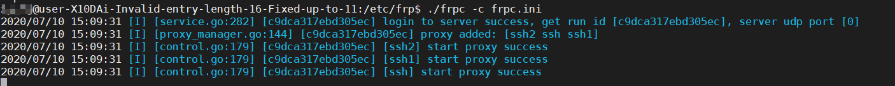

本文最后更新于：July 10, 2020 pm
0.准备工作
远端主机（内网主机，客户端）
个人电脑（外网设备）
frp工具 https://github.com/fatedier/frp
跳板主机（云服务器，或者有公网ip的电脑，服务器端）
1.跳板主机（服务器端）配置
以下内容 可以参考b站配置视频
¶1.1 购买云服务器
本次使用的是阿里云服务器，阿里称为ECS。
可以先申请阿里云的账号，购买一般配置即可，这里选用的是： CPU 1核 内存 2G 带宽 1Mbps
买好登录到后台，查看概览可以看到有创建好的实例
可以看到有公网ip和私网ip，私网ip不管
¶1.2 建立SSH连接
阿里云服务器连接比较麻烦，需要创建秘钥对
- 点击页面左侧 网络与安全–>密钥对
- 确保所选位置和服务器所在位置一致
- 点击右上角，创建密钥对，输入名称和保存组。其他的先不管
- 创建完成后选择保存.pem文件到本地
- 重启服务器（点击左侧实例与镜像–>实例 在对应的实例下点击 更多–>实例状态–>重启）
- 使用SSH工具对服务器进行连接，IP地址输入 公网ip 端口默认22；本文使用MobaXterm连接，在建立新的SSH时将私人密钥打钩，选择之前保存的.pem文件
登录成功后图示如下：
¶1.3 下载配置FRP
-
在releases界面找到需要的版本
本文的跳板机器是64位linux，选择对应的版本下载 -
将下载好的frp上传到跳板机器目录中解压
其中frpc开头的文件都表示客户端使用，即内网服务器。
frps开头的文件表示服务器使用，即跳板机器。 -
打开frps.ini文件
默认配置的端口为7000，token为明文密码，按照自己的喜好设置不要设置为自己常用的密码
-
回到窗口，进入到frp解压目录，输入命令
./frps -c frps.ini
成功运行 -
打开7000端口
进入云服务器后台，点击左侧安全组，在列表中选择配置规则

进入后点击手动添加，输入以下信息，只修改红圈处的内容，其他地方保持不变
到这里云服务器的服务器端配置完成了。
¶另外可以设置云服务器后端自动运行
a.服务器端输入代码
vi /lib/systemd/system/frps.service
代码段如下
[Unit]
Description=fraps service
After=network.target syslog.target
Wants=network.target
[Service]
Type=simple
ExecStart=/etc/frp/frp/frps -c /etc/frp/frp/frps.ini #此处安实际情况修改
[Install]
WantedBy=multi-user.targetb. 回到命令窗口，输入命令
systemctl start frps如果希望服务开机自启，则输入命令
systemctl enable frpsc. 查看程序是否运行成功
输入命令：
ps auxw
可以看到程序正常运行
2.内网主机（客户端）配置
下载方式同上，选择对应的frp版本，这里使用的也是64位linux版本，解压到客户端主机，这里存的位置是
/etc/frp/
打开frpc.ini文件，设置对应的映射端口
在命令行端口输入命令：
frpc -c frpc.ini
运行成功
3.SSH工具连接
打开MobaXterm新建session
输入IP地址，用户名，端口号
输入完成，点击确定
连接完成
本博客所有文章除特别声明外，均采用 CC BY-SA 3.0协议 。转载请注明出处！